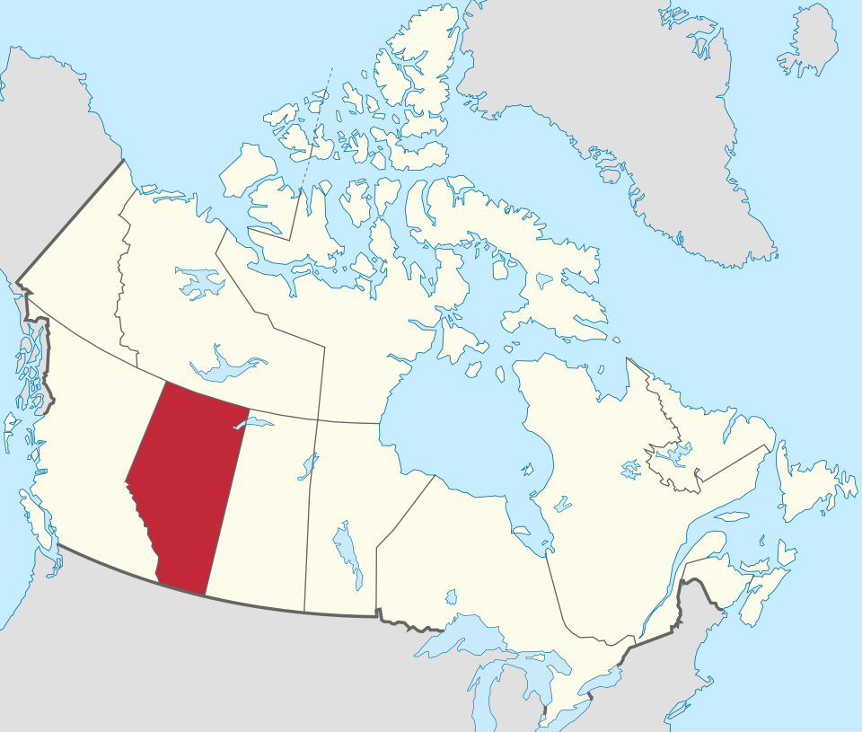

Read both columns
Each card shows Original wording next to Grade 7 wording. Compare them before you decide what the question is asking.
Explore each official question beside clearer Grade 7 wording. Use this page to read carefully, compare meanings, and look up key terms.
This is a classroom resource. The official ballot uses the original wording.
Each card shows Original wording next to Grade 7 wording. Compare them before you decide what the question is asking.
Words like Constitution, jurisdiction, and referendum have clear definitions. Search the glossary when a term is new.
This site explains what the questions say. It does not tell you how to vote or which side is “right.” Form your own opinion.
Grouped by theme. Scroll or use the navigation links to jump between sections.

These questions focus on immigration control, who can use provincial programs such as health care and education, fees for some newcomers, and proof of citizenship when voting in Alberta elections.
Do you support the Government of Alberta taking increased control over immigration for the purposes of decreasing immigration to more sustainable levels, prioritizing economic migration and giving Albertans first priority on new employment opportunities?
Should Alberta’s government take more control over who moves to Alberta, so fewer people move here, more of them come for jobs, and people who already live in Alberta get first chance at new jobs?
Do you support the Government of Alberta introducing a law mandating that only Canadian citizens, permanent residents and individuals with an Alberta-approved immigration status will be eligible for provincially-funded programs, such as health care, education and other social services?
Should Alberta pass a law saying that only Canadian citizens, permanent residents, and people with Alberta-approved immigration status can use provincial programs like health care, schools, and other social supports?
Assuming that all Canadian citizens and permanent residents continue to qualify for social support programs as they do now, do you support the Government of Alberta introducing a law requiring all individuals with a non-permanent legal immigration status to reside in Alberta for at least 12 months before qualifying for any provincially-funded social support programs?
(Canadian citizens and permanent residents would keep getting help the same way they do now.)
Should Alberta pass a law saying that people who are here on a temporary legal status must live in Alberta for at least 12 months before they can get provincial social support programs?
Assuming that all Canadian citizens and permanent residents continue to qualify for public health care and education as they do now, do you support the Government of Alberta charging a reasonable fee or premium to individuals with a non-permanent immigration status living in Alberta for their and their family’s use of the healthcare and education systems?
(Canadian citizens and permanent residents would keep getting public health care and school the same way they do now.)
Should Alberta charge people with temporary immigration status a fair fee for using health care and schools for themselves and their families?
Do you support the Government of Alberta introducing a law requiring individuals to provide proof of citizenship, such as a passport, birth certificate or citizenship card, to vote in an Alberta provincial election?
Should Alberta pass a law saying you must show proof you are a Canadian citizen (like a passport, birth certificate, or citizenship card) in order to vote in an Alberta provincial election?
These questions ask whether Alberta should work with other willing provinces to change the Constitution — for example, how judges are chosen, the Senate, opting out of some federal programs, and which laws win when provincial and federal rules conflict.
Do you support the Government of Alberta working with the governments of other willing provinces to amend the Canadian Constitution to have provincial governments, and not the federal government, select the justices appointed to provincial King’s Bench and Appeal courts?
Should Alberta work with other provinces that agree to change Canada’s Constitution so provinces — not the federal government — choose the judges for provincial high courts (King’s Bench and Court of Appeal)?
Do you support the Government of Alberta working with the governments of other willing provinces to amend the Canadian Constitution to abolish the unelected federal Senate?
Should Alberta work with other provinces that agree to change Canada’s Constitution to get rid of the federal Senate (the part of Parliament whose members are appointed, not elected)?
Do you support the Government of Alberta working with the governments of other willing provinces to amend the Canadian Constitution to allow provinces to opt out of federal programs that intrude on provincial jurisdiction such as health care, education, and social services, without a province losing any of the associated federal funding for use in its social programs?
Should Alberta work with other provinces that agree to change Canada’s Constitution so a province can say “no” to federal programs in areas like health care, schools, and social services — and still keep the federal money to use on its own programs?
Do you support the Government of Alberta working with the governments of other willing provinces to amend the Canadian Constitution to better protect provincial rights from federal interference by giving a province’s laws dealing with provincial or shared areas of constitutional jurisdiction priority over federal laws when the province’s laws and federal laws conflict?
Should Alberta work with other provinces that agree to change Canada’s Constitution so that when Alberta’s laws and federal laws clash in areas the province controls (or shares), Alberta’s laws come first?

This question is different. Instead of Yes / No, voters choose between two options: staying a province of Canada, or starting the legal process for a later binding referendum on whether Alberta should separate from Canada.
Should Alberta remain a province of Canada, or should the Government of Alberta commence the legal process required under the Canadian Constitution to hold a binding provincial referendum on whether or not Alberta should separate from Canada?
Should Alberta stay a province of Canada, or should Alberta’s government start the legal steps needed to hold a later, binding vote on whether Alberta should leave Canada?
Key terms from the referendum questions, with clear classroom definitions.
No matching terms. Try another word.